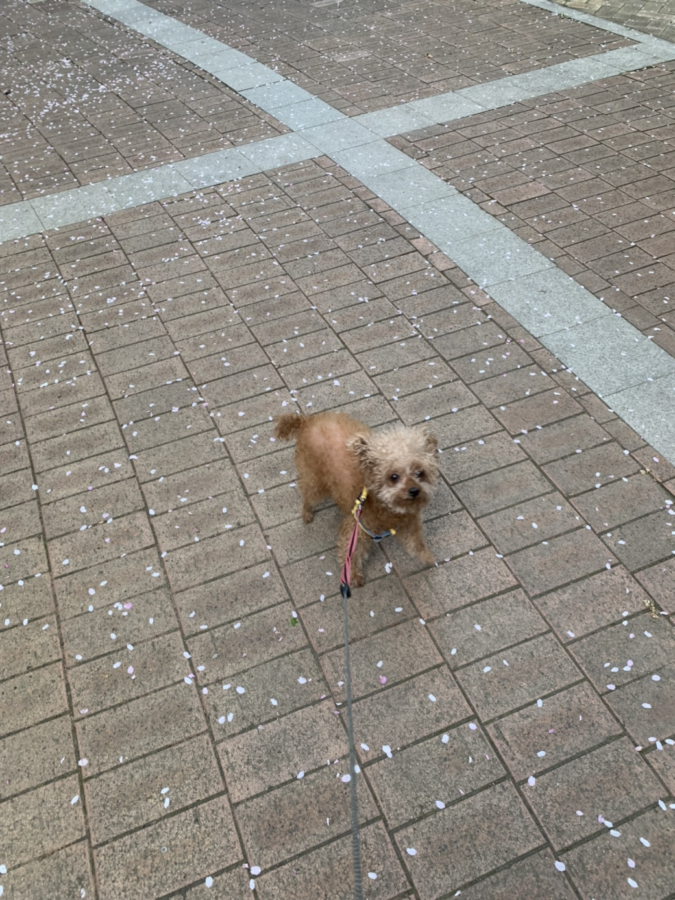

I sure as hell will
And when the sun goes down We'll meet up by the bonfire baby  The moods gon be crazy cause i think i'm in love with you Gather all of your friends bring a bottle of gin Make the neighbours go mad just doing what we do We'll be dancing to songs from the old days, Swing from the trees, bend all the rules cause we just love how it feels By the bonfire baby The moods gon be crazy cause i think i'm in love with you Morning come We'll swim away our hangover And wash our sins away Driving home I'll let you DJ in my Range Rover Oh man I love this place And baby tonight, we'll have a good time Forget all of our troubles Close our eyes and let go I don't mind if we get our drinks on Your mama may not like it I sure as hell will And when the sun goes down We'll meet up by the bonfire baby The moods gon be crazy cause i think i'm in love with you Gather all of your friends bring a bottle of gin Make the neighbours go mad just doing what we do We'll be dancing to songs from the old days, Swing from the trees , bend all the rules cause we just love how it feels By the bonfire baby The moods gon be crazy cause i think i'm in love with you Ohhh ohhh ohhh We'll meet up by the bonfire baby The moods gon be crazy cause i think i'm in love with you